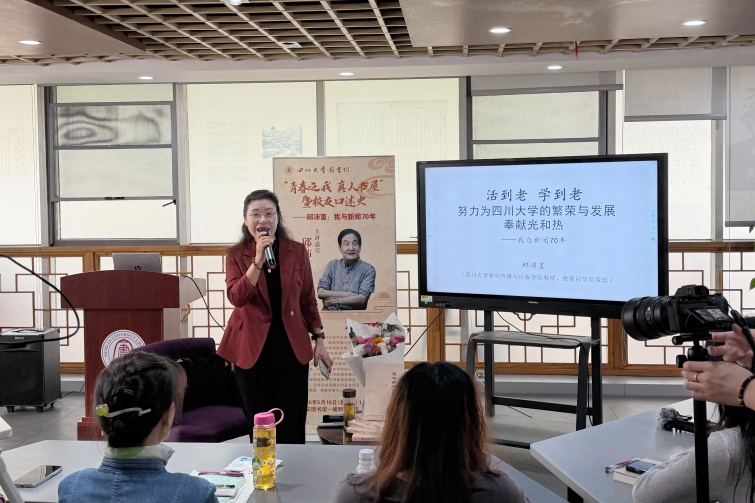

学院通知 · 教学通知
邱沛篁：我与新闻70年 ——青春之我・真人书屋暨校友口述史分享会顺利举行
发布时间：2026-05-18 15:52:38
为弘扬 终身治 学精神，传承优良学术文脉，5 月 16日 上午 ， 四川大学图书馆“青春之我 ・ 真人书屋”暨校友口述史 分享会 在江安图书馆明远文库举行。 86岁高龄的 新闻传播与出版学院 教授、 博士生导师， 原新闻学院院长邱沛篁受邀主讲 ，图书馆 党委副书记兼纪委书记、 副馆长杜小军主持 ，四川大学新闻传播与出版学院、出版社和图书馆的师生代表及校友参与活动。 今年恰逢四川大学建校130周年、 四川大学 新闻传播学科创立45周年，也是邱沛 篁 教授考入川大中文系70周年。在此重要节点编撰出版的《我与新闻70年》，完整记录了邱沛 篁 教授七十载深耕新闻领域、扎根川大沃土的成长历程，是见证川大新闻教育发展的珍贵文献，更是对四川大学办学传统与新闻学科发展的生动见证与致敬。 新闻传播与出版学院党委副书记陈薇在发言中表示，邱沛 篁 教授作为川大新闻学的开创者与发展见证者，其七十年新闻教育与从业历程，不仅完整镌刻了川大新闻学科的成长脉络，更是学校百年办学精神与人文传统的鲜活体现。 活动开始 ，邱沛 篁 教授向图书馆捐赠《我与新闻70年》 等 著作，助力馆藏资源建设，惠及广大师生读者。 副馆长杜小军代表图书馆接受捐赠，为邱沛 篁 教授颁发捐赠证书并表达感谢。 活动现场，邱沛 篁 教授以 “七十年回顾、师生共进薪火、治学育人体会” 为脉络，深情回望 1956 年至今的新闻求索之路。从求学时期以校报《人民川大》、图书馆报刊为窗口热衷看新闻，1957 年发表新闻处女作《汽车在平坦的大道上行驶》开启写作之路； 到 1960 年提前毕业留校，投身校报《人民川大》编辑工作，开启长达 20 年的编采实务生涯；从赴复旦大学新闻系进修，返校后受命参与创办川大新闻专业，以 “请进来、走出去” 的思路破解初创期师资教材匮乏难题；到 1998 年成为川大及西南地区首位新闻学博士生导师，两次走进中南海参 加全国 新闻教育工作座谈会，担任两届全国高校新闻学科教学指导委员会副主任，2018 年获中国新闻史学会终身成就奖。邱沛 篁 教授用质朴真挚的语言，串联起他与“写新闻、编新闻、学新闻、教新闻”相伴70年的珍贵往事，生动诠释了 “活到老、学到老” 的终身学习理念和 “为川大繁荣发展奉献光和热” 的赤子初心。 讲座中，邱沛 篁 教授还分享了川大新闻学科从初创到发展壮大的艰辛历程，细数师生同心、薪火相传的动人故事，阐释 “学生是我师，我是学生友” 的教育理念。他结合自身七十载阅历，分享了感恩坚守、知行合一、实干笃行等深刻体会，勉励在场师生珍惜时光、勤学善思、勇担使命。整场讲座兼具学术厚度与人文温度，语言平实真挚、内容详实丰富，为在场师生带来深刻的学术启迪与精神滋养。 在 互动环节， 现场师生及校友 围绕新闻 传播 、 实践锻炼 等话题积极提问，邱沛 篁 教授耐心细致作答 ，并 激励学生们 敢想敢干、 勤于 实践、主动 进取 。 现场交流热烈 ，气氛 融洽。 此次活动是四川大学图书馆 践行 文化育人使命、深化学术文化建设的重要实践，也是丰富校园文化内涵、传承优良学风的有力举措。未来，图书馆将持续立足服务师生、赋能学术、传承文化的核心职能，打造优质学术交流平台，赓续百年文脉，凝聚奋进力量， 为学校人才培养与高质量发展提供坚实文化支撑 ，为建设高水平大学贡献力量。 供稿：研究发展中心 许笑月 谭林
